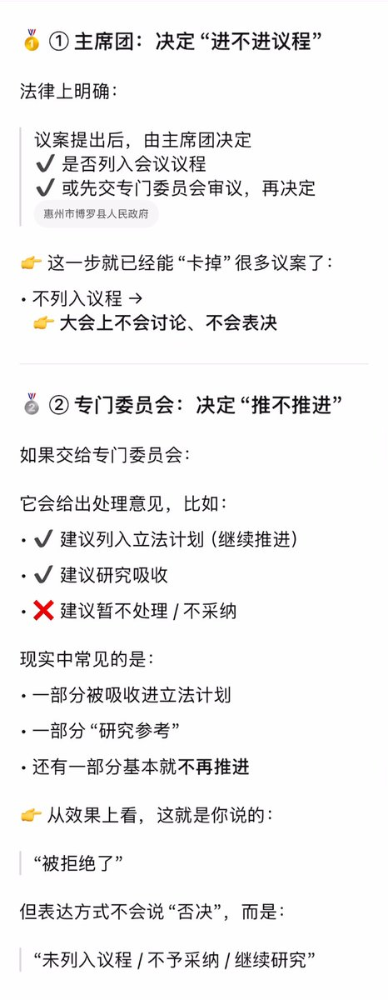

時璃風医詩🌈🏳️🌈
@hagishigure
冷知识：提出为了防止大学生沉迷游戏将防沉迷提到22岁的也是你们最爱的全国人大。
再一个冷知识：超过一半的人不知道自己当地的人大代表是谁。
你说不通过是法团主义不如自己想想那些b登代替人民提出pr是不是法团的变种。🥴

neⒶστήρ |星ない
@quasarne
查了一下全国人大的数据，有点绷不住，法团味大得批爆。之前说香港是法团主义，和大陆比那是小巫见大巫了。
2026年全国人大：
👉 代表一共提了 226件议案
👉 结果是：0件进入大会审议，0件当场通过
不是通过少，是一件都没有资格上桌投票。
这些议案最后去哪了？
统一打包 → https://t.co/sIi6Kc9I4T